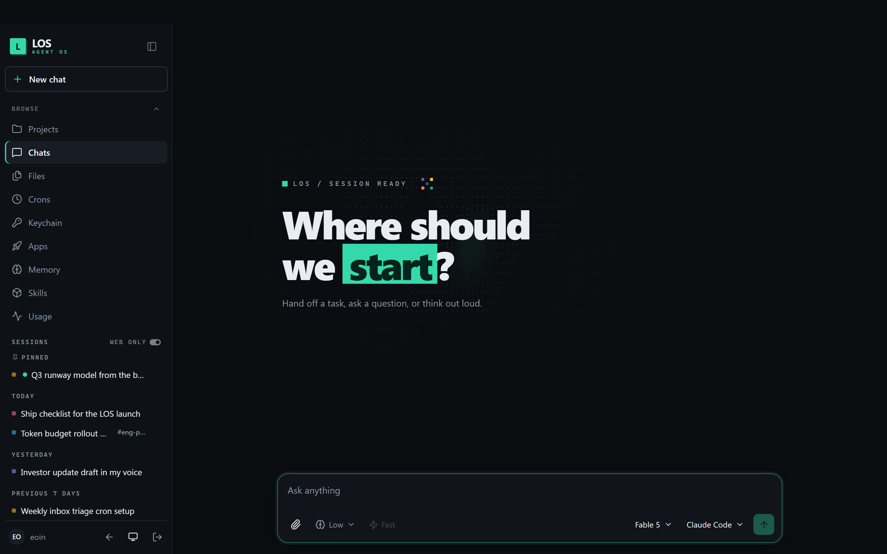

THE WORKFORCE
Every person gets an agent
Not a chatbox that forgets you — a worker. Each employee’s agent remembers them, holds their keys in a keychain, runs their crons, and works on a durable computer where installed tools stay installed. Channels and projects get shared scopes, so the agent in #launch-week knows what #launch-week knows — and nothing it shouldn’t.
- Isolated memory, files, keychain, and sandbox per scope
- In Slack and on the web — same agent, same history
- Capture a workflow once as a skill, promote it org-wide
